Code as Agent Harness
Toward Executable, Verifiable, and Stateful Agent Systems — code를 agent 인프라의 중심으로 보는 통합 관점
오늘 다룰 내용
Introduction & Problem Framing
code는 더 이상 LLM의 출력 결과물이 아니라 agent가 reasoning, acting, verifying하는 operational substrate이다.
Code: 출력에서 실행 기반으로
LLM은 competitive programming에서 repository-level SWE까지 강력한 code 능력을 보여왔다. 하지만 agentic system에서 code는 단순한 target output를 넘어, agent가 reasoning·acting·environment modeling·verification을 수행하는 operational substrate로 자리 잡고 있다.
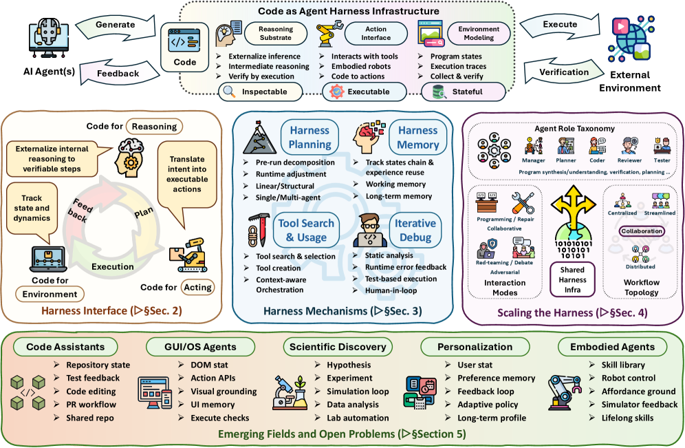
세 가지 coupling element
Agent harness = stateless model을 functional agent로 만드는 software layer (tools, APIs, sandboxes, memory, validators, permission boundaries, execution loops, feedback channels). 논문은 long-running agentic system의 세 요소를 구분한다.
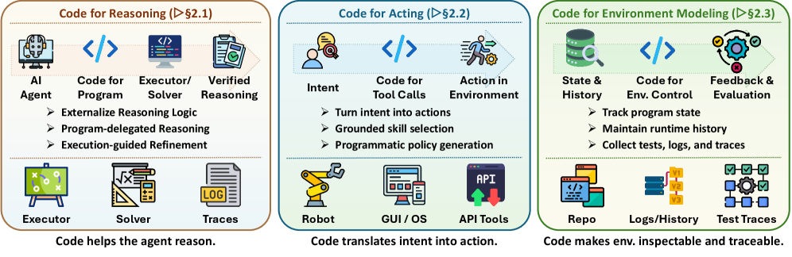
3-Layer Taxonomy of Code as Agent Harness
Layer 1: Harness Interface
code가 agent와 task environment 사이의 기본 interface가 되는 방식 — reasoning, acting, environment modeling
추론을 executable & verifiable하게
Pure CoT는 reasoning과 computation을 모두 자연어로 처리 → 중간 상태를 harness가 verify할 수 없음. Code-for-reasoning은 model이 program을 생성하고 external runtime이 실행·평가하여, reasoning과 computation을 분리한다.
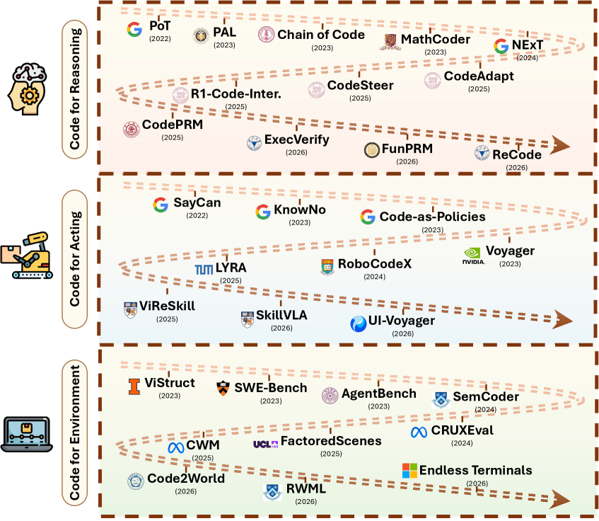
세 가지 reasoning interface 비교
행동을 programmable하게
Code-for-reasoning과 달리, action은 부분 관찰·동적 환경에서 실행됨. failure가 invalid state transition, delayed feedback, silent error로 발생. 핵심 과제는 grounding: abstract output을 환경 제약에 맞는 executable behavior로 변환.
환경을 inspectable & modifiable하게
환경을 opaque external process로 두지 않고, simulator·repository·tests·traces·logs라는 computational artifact로 표현. 실행 가능한 환경 = verifiable state transition + persistent & modifiable representation.

Layer 2: Harness Mechanisms
code가 agent loop에 들어온 뒤, 단일 generation step를 넘어 reliable하게 만드는 system layer — planning, memory, tool use, PEV loop, harness optimization
계획 = harness control layer
Planning은 단순한 모델 내부 reasoning이 아니라, agent가 intent를 executable step으로 externalize하고 trajectory를 규제하는 harness 제어 장치. 4가지 유형으로 분류.
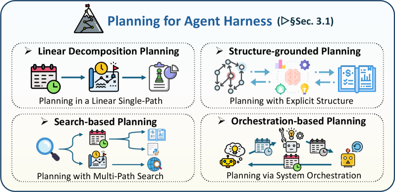
상태 관리 layer: 단순 context window가 아님
Memory는 model context와 durable storage 사이에서 어떤 정보를 active에 두고, 무엇을 압축하고, 무엇을 외부에 offload할지 결정하는 state-management layer. 장기 SWE task에서 context 폭발, 반복 localization, local consistency 붕괴를 방지.
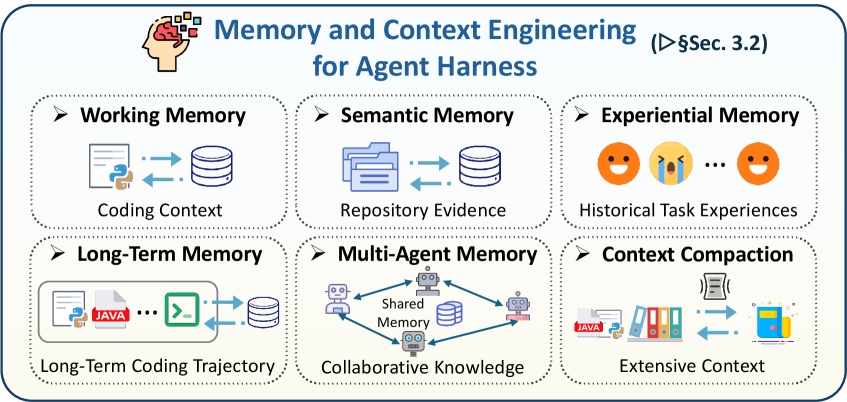
도구 = governed interface
Tool use는 단순 부가 기능이 아니라 model intent와 external system 사이의 governed interface. 어떤 tool을 노출할지, 권한은 무엇인지, 실행 위치, 결과 정제, 위험 action의 human approval 등을 harness가 결정.
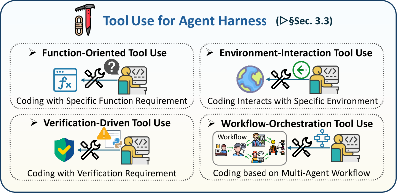
Plan → Execute → Verify Control Loop
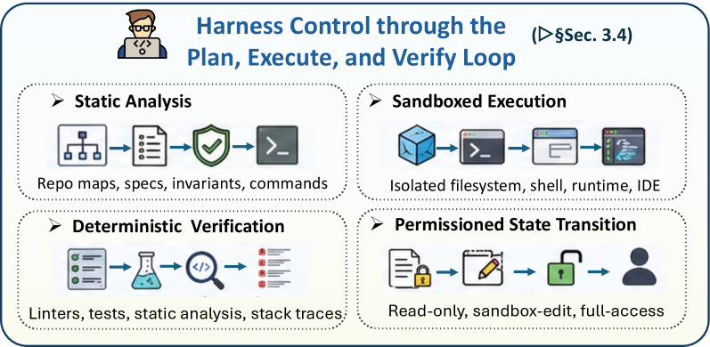
harness 자체를 최적화 대상으로
AHE는 prompt engineering(지시 변경)도 context engineering(증거 변경)도 아닌, operating environment 자체를 분석·수정하는 문제. 많은 agent 실패가 model 생성 능력이 아니라 harness의 약점에서 비롯됨.
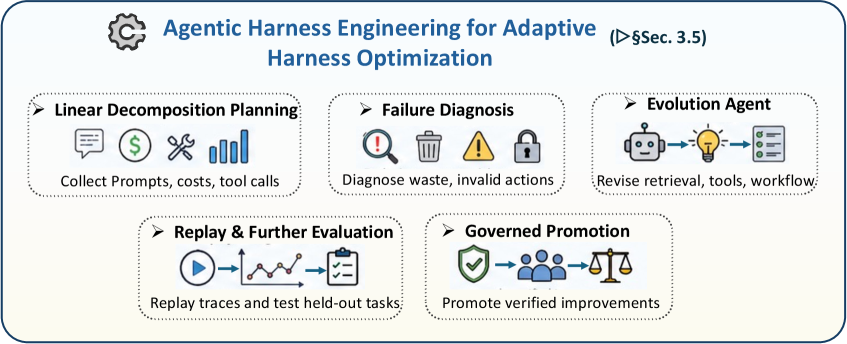
Layer 3 & Beyond: Multi-Agent, Applications, Open Problems
단일 agent에서 multi-agent로, 그리고 실제 응용과 미해결 과제까지
역할 분화 & artifact 기반 조정
단일 agent의 한계: context window, specialization 부족, 자기 오류 검증 불가. Multi-agent는 역할 분화 + 공유 code artifact + 실행 feedback로 조정. code가 단순 출력이 아니라 planning·acting·verifying·개선의 shared substrate.
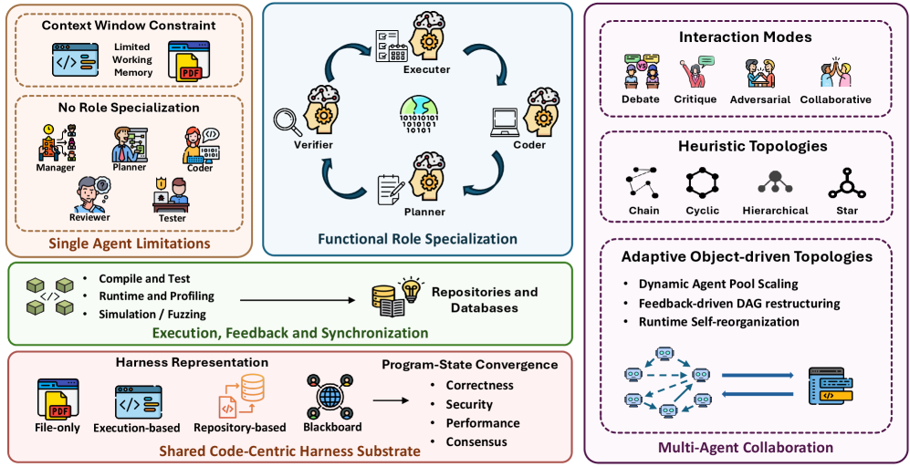
미리 정의된 vs 적응형 topology
공유 code substrate & 수렴 기준
대다수 시스템이 implicit/file-only 표현에 머물러, agent간 state divergence를 감지 못함. code는 executable하므로 objective behavioral signal로 수렴 가능. 논문은 4수준 표현과 6가지 수렴 패턴을 식별.
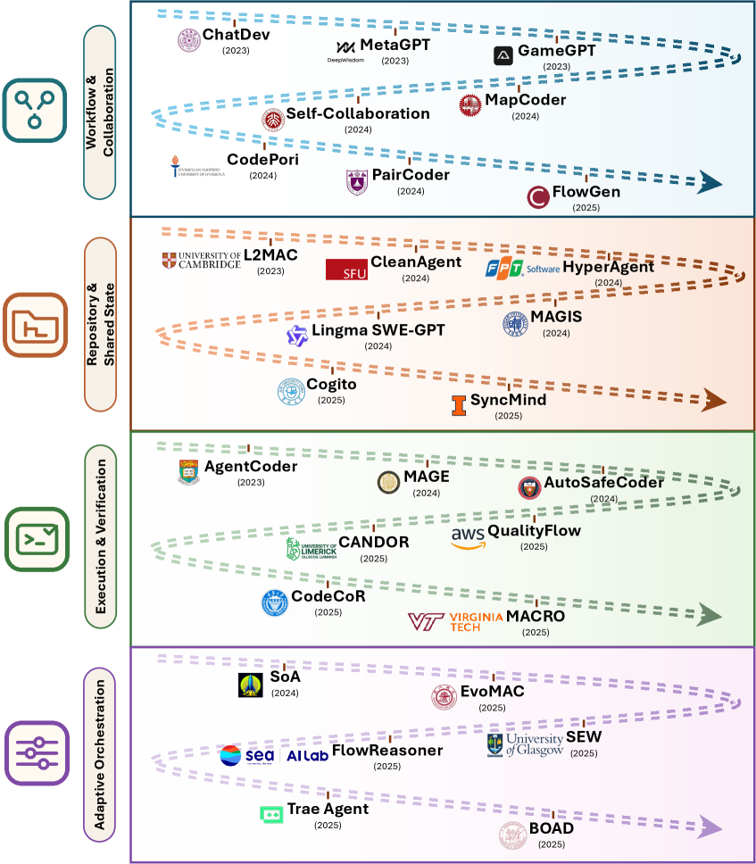
Code Assistants & GUI/OS Agents
code-as-harness가 가장 가시적으로 구현되는 두 영역. Code assistant는 repository 전체를 operational workspace로 삼고, GUI/OS agent는 모든 관찰과 행동이 code로 표현되는 'program world'에서 동작.
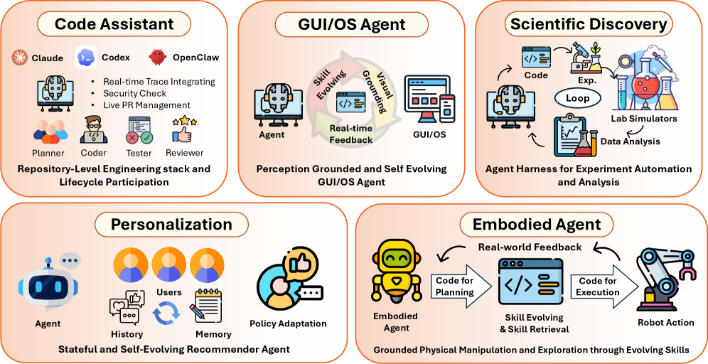
과학 발견, Embodied, Personalization
scientific method 자체가 hypothesize→design→execute→observe→revise의 폐루프이며, 각 단계가 program으로 표현 가능. Embodied는 code가 grounding interface이자 safety boundary. Personalization은 사용자 preference를 editable code artifact로.
6대 미해결 과제
code는 더 이상 LLM이 생성하는 산출물이 아니다. code는 agent가 reasoning하고, acting하고, 환경을 modeling하고, feedback을 관찰하고, 진행을 verify하는 — executable, inspectable, stateful medium이다.
Thank you.
질문 환영합니다.